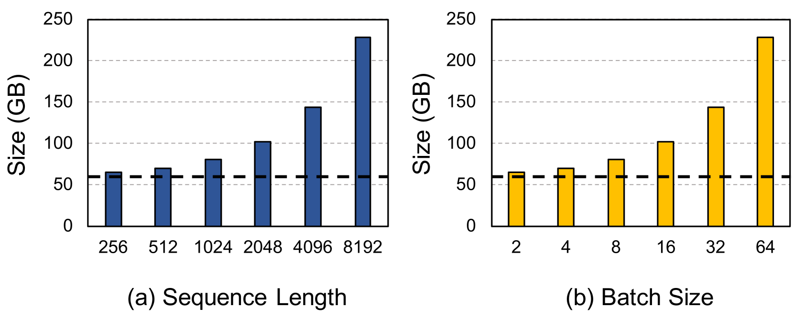

发展脉络
效率优化从权重量化和 KV Cache，发展到 paged serving、推测解码、Prefill/Decode 分离和端到端成本工程。
KV Cache 是推理的「隐形显存黑洞」：上下文越长占得越多，并发一高就 OOM。分级存储的思路很直白——不常用的数据搬到便宜的地方。把 KV 从 HBM 挪到 DRAM 甚至 SSD，配合前缀复用，是长上下文与高并发推理绕不开的工程。本节从 KV 的显存公式出发，拆解三级存储、前缀复用、量化压缩、淘汰策略和代表性系统。
KV 缓存按「被再次访问的可能性」分层：热数据留在最快但最贵的 HBM，温数据放 DRAM，冷数据落 SSD。访问时先查 HBM，未命中再逐级向上取——本质上就是给 KV 做了一层「内存换页」。加上前缀复用和量化，整个系统的目标是在有限显存下服务更多并发、更长的上下文。
KV Cache 的大小随「层数 × 头数 × 头维度 × 上下文长度 × 并发数」线性增长，且不受权重量化的影响——量化的是权重，缓存是运行时产生的。先来看一个精确的显存估算公式。
对于标准多头注意力模型，单条请求的 KV Cache 大小为：
$$M_{\text{KV}} = 2 \times n_{\text{layers}} \times n_{\text{heads}} \times d_{\text{head}} \times L \times \text{sizeof(dtype)}$$
其中 $L$ 是序列长度（token 数），系数 2 是因为 K 和 V 各一份。以 Llama-2-70B 为例：80 层、64 头、128 维、FP16（2 字节）：
$$M_{\text{KV}} = 2 \times 80 \times 64 \times 128 \times L \times 2 = 2{,}621{,}440 \times L \text{ 字节} \approx 2.5 \text{ MB} \times L$$
也就是说，每增加 1000 token 的上下文，KV 就多吃约 2.5 GB 显存。一条 128K 上下文的请求，KV 就要占约 320 GB——远超单卡 80GB HBM 的容量。再加上并发，显存压力更加严峻。
「KV 到底占了多少」这个问题，与其空想，不如直接看论文里的实证数据。下面这张图来自专门做 KV 卸载的 InfiniGen（OSDI 2024），它把 KV Cache 和模型权重的体积画在同一张图上，一眼就能看出「KV 什么时候反超权重」。

读这张图，先找那条虚线——它标的是模型权重的体积（图中用 OPT-30B）。然后看 KV Cache 的体积曲线：随着横轴（子图 (a) 是序列长度，子图 (b) 是 batch 大小）增长，KV 曲线一路爬升，很快越过虚线。这就是本页核心论点的第一手证据：KV Cache 不是「一点点额外开销」，它会在长上下文或高并发下超过权重本身，成为显存的第一大项。要注意图的量级：OPT-30B 权重大约 60 GB（FP16），而 KV 曲线在序列长度和 batch 都增大时可以涨到数百 GB——这正是「一张 80GB 的卡装不下」的由来。
第二，注意两个子图分别证明了什么。子图 (a) 证明「长度维度」：固定 batch=16，序列长度从几千涨到几万，KV 线性上升，越过权重虚线；子图 (b) 证明「并发维度」：固定序列长度=2048，batch 从 1 涨到几十，KV 同样线性上升。两条增长曲线意味着：无论你是「一个超长请求」还是「一批普通请求」，KV 都会成为瓶颈——这解释了为什么 KV 管理是推理系统绕不开的工程问题，而不是某个特定场景的偶发困难。第三，结合本页主题看：图里 KV 曲线越过虚线的那个「交叉点」位置，就是分级存储应该开始发力的位置——在交叉点之前权重是显存大头（量化权重更划算），交叉点之后 KV 才是大头（量化 KV、分级卸载更划算）。
KV Cache 一节讲清了它怎么来，本节讲怎么把它放得下。核心矛盾是：HBM 极快但极小，SSD 极大但极慢，中间需要一个智能的搬运系统。
分级存储的核心原理与操作系统的虚拟内存如出一辙：CPU cache → DRAM → swap 的层级结构，对应到 GPU 推理就是 HBM → DRAM → SSD。
| 层级 | 带宽 | 延迟 | 容量 | 适合放什么 | 换入代价 |
|---|---|---|---|---|---|
| HBM | ~3 TB/s | ~200 ns | 单卡 80-192 GB | 正在解码序列的活跃 KV | —（已在位） |
| Host DRAM | ~50-100 GB/s | ~1-5 μs | 数百 GB-1 TB | 共享前缀、近期请求的 KV | PCIe 传输 ~2 μs/GB |
| NVMe SSD | ~3-7 GB/s | ~10-50 μs | 数 TB | 冷对话、可延迟恢复的 KV | SSD→DRAM→HBM 两跳 |
关键取舍：KV 卸载的「省显存」是用「读回延迟」换的。因此工程上只卸载近期用不到的 KV——否则每次解码都要等 SSD，延迟直接崩。延迟差异是数量级的：HBM 200ns vs SSD 50μs，差 250 倍。
KV 分级存储真正的价值杠杆是前缀复用：多个请求共享同一段前缀（系统提示词、文档上下文、Agent 的固定历史），这段前缀的 KV 只需算一次，之后所有请求直接命中。在 RAG 和 Agent 场景中，前缀复用可以把 prefill 阶段的计算量砍掉 60-90%。
前缀复用的实现核心是前缀哈希 + 块级索引。把输入序列切成固定大小的 block（如 16 token），每个 block 的 KV 缓存以「block 内容的哈希」为 key 存储。新请求到达时，逐 block 查哈希，命中的 block 直接复用，未命中的才需要计算。
import hashlib
from dataclasses import dataclass
@dataclass
class KVBlock:
"""一个 KV 缓存块"""
block_id: str # 内容哈希
tokens: list # 这个 block 对应的 token
k_cache: object # K 缓存（tensor）
v_cache: object # V 缓存（tensor）
access_count: int # 访问次数（用于淘汰策略）
last_access: float # 最后访问时间戳
class PrefixKVCache:
"""前缀感知的 KV 缓存管理器"""
def __init__(self, block_size=16, max_hbm_blocks=1000,
max_dram_blocks=5000):
self.block_size = block_size
self.hbm_cache = {} # 热：HBM 上的 block
self.dram_cache = {} # 温：DRAM 上的 block
self.max_hbm = max_hbm_blocks
self.max_dram = max_dram_blocks
def _block_hash(self, tokens):
"""计算 token 序列的哈希作为 block ID"""
return hashlib.md5(
str(tokens).encode()
).hexdigest()
def get_or_compute(self, tokens, compute_fn):
"""获取 KV 缓存：先查缓存，未命中则计算
Args:
tokens: 完整 token 序列
compute_fn: 计算指定范围 KV 的函数
Returns:
(hit_blocks, miss_blocks) 命中和未命中的 block 列表
"""
hits, misses = [], []
# 按 block_size 切分
for i in range(0, len(tokens), self.block_size):
block_tokens = tokens[i:i + self.block_size]
block_id = self._block_hash(block_tokens)
if block_id in self.hbm_cache:
# HBM 命中：最快路径
self.hbm_cache[block_id].access_count += 1
hits.append(("hbm", block_id))
elif block_id in self.dram_cache:
# DRAM 命中：需要搬回 HBM
block = self.dram_cache.pop(block_id)
self._put_hbm(block_id, block)
hits.append(("dram", block_id))
else:
# 未命中：需要计算
k, v = compute_fn(i, i + len(block_tokens))
block = KVBlock(
block_id=block_id,
tokens=block_tokens,
k_cache=k, v_cache=v,
access_count=1,
last_access=time.time()
)
self._put_hbm(block_id, block)
misses.append(block_id)
return hits, misses
def _put_hbm(self, block_id, block):
"""放入 HBM 缓存，满了则淘汰到 DRAM"""
if len(self.hbm_cache) >= self.max_hbm:
# LRU 淘汰：找最久未访问的 block
oldest = min(self.hbm_cache.values(),
key=lambda b: b.last_access)
# 淘汰到 DRAM
self.dram_cache[oldest.block_id] = oldest
del self.hbm_cache[oldest.block_id]
# 如果 DRAM 也满了，继续淘汰到 SSD（省略）
if len(self.dram_cache) >= self.max_dram:
oldest_dram = min(self.dram_cache.values(),
key=lambda b: b.last_access)
del self.dram_cache[oldest_dram.block_id]
self.hbm_cache[block_id] = block这段代码展示了前缀复用的核心逻辑。实际生产系统中（如 vLLM 的 RadixAttention、SGLang 的 RadixCache），实现要复杂得多——需要处理并发安全、GPU 显存对齐、block 粒度的 LRU/LFU 淘汰策略、以及与前缀树的结合。
| 指标 | 含义 | 目标值 | 影响 |
|---|---|---|---|
| 前缀命中率 | 请求的前缀 KV 已在缓存中的比例 | ＞80% | 直接决定 prefill 延迟 |
| HBM 命中率 | 在 HBM 中命中的比例（不需跨介质读取） | ＞95% | 决定解码延迟稳定性 |
| 换入延迟 | 从 DRAM/SSD 搬回 HBM 的时间 | ＜5 ms | 影响首 token 延迟 TTFT |
| 换出频率 | 单位时间内 KV block 被淘汰出 HBM 的次数 | 越低越好 | 频繁换出说明缓存太小 |
除了搬位置，另一个直接手段是压缩 KV 本身。KV 量化把 FP16 的 K 和 V 压到 INT8 甚至 INT4，直接砍掉 2-4 倍空间。与权重量化不同，KV 量化对精度的影响更小——因为 KV 是中间状态而非最终输出，误差不会像权重那样累积放大。
| 量化精度 | 每 token KV 大小 | 128K 上下文占用 | 精度损失 | 适用场景 |
|---|---|---|---|---|
| FP16 | 2.5 MB | ~320 GB | 0% | 精度敏感场景 |
| INT8 | 1.25 MB | ~160 GB | ＜1% | 推荐默认选择 |
| INT4 | 0.625 MB | ~80 GB | 1-3% | 高并发 / 超长上下文 |
| FP8 | 1.25 MB | ~160 GB | ＜0.5% | 新一代硬件支持 |
KV 量化的实现比权重量化简单，因为它只需要在把 K/V 写入缓存前做线性映射。下面是一个最小可运行的 INT8 量化示例（伪代码，示意映射逻辑，所有张量运算以官方引擎实现为准）：
import numpy as np
def quantize_kv_fp16_to_int8(kv_fp16, axis=-1):
"""把 FP16 的 K 或 V 张量线性量化到 INT8。
Args:
kv_fp16: shape (batch, n_heads, seq, d_head) 的 FP16 张量
Returns:
kv_int8: 量化后的 INT8 张量
scale: 每组的缩放因子
zero: 零点（对称量化时为 0）
"""
# 按 head 维度分组求范围（per-head 量化最常用）
qmax = 127.0
amax = np.max(np.abs(kv_fp16), axis=-1, keepdims=True)
scale = amax / qmax # 缩放因子
kv_int8 = np.round(kv_fp16 / scale).clip(-qmax, qmax).astype(np.int8)
return kv_int8, scale, 0.0
def dequantize_kv_int8(kv_int8, scale, zero=0.0):
"""反量化：乘回 scale 还原到 FP16 空间"""
return kv_int8.astype(np.float32) * scale + zero
# 注意：Key 比 Value 更敏感，因为注意力分数 softmax(Q·K) 直接依赖 Key。
# 实践中常对 Key 用更高精度（如 FP8）或对 Value 用更激进的 INT4。实测经验（社区与论文一致）：把 KV 从 FP16 压到 INT8，在多数生成任务上精度损失 <1%，几乎无损；压到 INT4 损失约 1-3%，在长上下文、检索增强场景更明显。因此默认选 INT8，只有显存真的扛不住（超长上下文、超高并发）才上 INT4。Key 通道建议保留更高精度。
Mooncake 是 Kimi（月之暗面）的推理架构，把「以 KV 为中心的推理」推到极致。传统推理中，KV 是每个 GPU 节点的私有数据；Mooncake 把 KV 变成集群级共享资源，通过分布式缓存层让任意节点都能访问任意请求的 KV。
Mooncake 的关键设计点：
LMCache 聚焦「模型无关的 KV 缓存层」：提供统一 API 把 KV 存到 GPU/DRAM/远端，支持前缀复用、块级存储与跨请求共享，已适配多种推理引擎。它的设计哲学是「缓存逻辑从引擎里抽出来，变成独立基础设施」。
| 维度 | Mooncake | LMCache |
|---|---|---|
| 定位 | 完整推理架构 | 可插拔缓存中间件 |
| 目标场景 | 大规模共享集群（Kimi） | 通用推理引擎增强 |
| KV 共享范围 | 集群级（跨节点） | 单节点 + 可选远端 |
| 与 PD 分离 | 深度集成 | 可配合但不强依赖 |
| 接入成本 | 高（需整体架构改造） | 低（作为库接入） |
| 核心创新 | KV 即集群资源 | 缓存逻辑独立化 |
当缓存满了，必须淘汰一部分 KV block。淘汰策略直接影响命中率和性能，是分级存储系统最微妙的设计点。
| 策略 | 原理 | 优点 | 缺点 | 计算开销 |
|---|---|---|---|---|
| LRU | 淘汰最久未访问的 block | 实现简单，对突发访问友好 | 不区分访问频率 | O(1) |
| LFU | 淘汰访问次数最少的 block | 保留高频 block | 老 block 永远不被淘汰 | O(log n) |
| 优先级 | 按业务规则分配优先级 | 灵活可控 | 规则需人工设计 | O(1) |
| 注意力分数 | 淘汰注意力权重低的 token 的 KV | 精度最高，对效果影响最小 | 需要额外计算注意力分数 | O(n²) |
KV 分级存储与 PD 分离（Prefill-Decode Disaggregation）是天然搭档。PD 分离把 prefill 和 decode 分到不同节点，中间通过 KV 传输衔接。KV 分级存储正好解决「KV 在节点间怎么传、怎么存」的问题。
这种架构的优势在于：Prefill 节点不需要保留 KV，可以立即处理下一个请求；Decode 节点不需要重算 prefill，直接从池中读取。KV 缓存池成为了两个阶段之间的「消息队列」和「状态存储」。
分级存储上线后，真正的工程难点从「能不能放下」变成「放得对不对」。一份可落地的监控清单：
一个常被忽略的点：监控要和 PD 分离、推理引擎一起看。KV 命中率掉，可能是 Decode 节点路由变了（缓存亲和失效），也可能是前缀缓存被关闭了。把 KV 指标和引擎的 TTFT/TPOT 曲线叠在同一张 Grafana 面板上，定位最快。
分级存储的全部决策，最后都落在一个账上：把 KV 挪去更慢的地方省下的显存，到底值不值回读时付出的延迟。这需要同时算三笔账——显存账、带宽账、延迟账。
显存账：卸载的收益是「省下 HBM 空间」。前面算过，70B 模型 FP16 下每 1000 token 的 KV 约 2.5 GB，一条 32K 上下文的请求就要吃掉 80 GB——几乎是整卡显存。如果 10 条这样的请求并发，光 KV 就 800 GB，单机无论如何放不下，必须靠分级存储摊到 DRAM 和 SSD 上。这一层没有选择余地：要么卸载，要么减并发。
带宽账：但卸载的代价不只是延迟，还有带宽。每次把 KV 从 DRAM 读回 HBM，要占用 PCIe 带宽；从 SSD 读回则要先过 PCIe 再进 DRAM。NVMe SSD 的带宽约 3-7 GB/s，而推理引擎在 Decode 阶段本身就要以 2 TB/s 的量级读权重——两者差两三个数量级。换句话说，卸载一次的带宽开销，足够权重读几百次。因此「命中一次缓存就够本」的直觉在这里不成立：如果 KV 命中后只被读一两次，省下的显存还不如花掉的带宽值钱。
延迟账：延迟的代价是数量级的。HBM 访问约 200 ns，DRAM 约 1-5 μs，SSD 约 10-50 μs。如果一次 Decode 步骤恰好在等一个被错误换出的 KV 从 SSD 回读，单步延迟会从几十微秒暴涨到毫秒级——TPOT 直接翻倍甚至更多，用户立刻感觉到卡顿。所以正确的卸载对象是「确认短期不会被访问」的冷 KV，而不是「可能还会用」的温 KV。
把三笔账合起来，可以得到一个实用判断准则：只有当「KV 的再次访问次数 × 单次访问的权重读取时间」超过「卸载 + 回读的总耗时」时，卸载才划算。换句话说，命中率越高、复用次数越多的 KV 越值得放进更便宜的层级；命中率低的一次性 KV，宁可占用 HBM 或直接丢弃，也不要走卸载流程。这也是为什么所有分级存储系统都强调命中率指标——它直接决定了这套账是正还是负。
上一节说了「命中率高才值得卸载」，那命中率本身从哪来？答案不是靠运气，而是靠共享前缀的设计。在 RAG 场景，所有用户查询同一份文档库，检索出的上下文 chunk 高度重叠；在 Agent 场景，同一套系统提示词和工具定义反复出现。这些重复出现的前缀，就是命中率的来源。
工程上有两种把命中率「做出来」的方法。一种是内容寻址：把前缀的 token 序列做哈希，相同内容的 block 天然共享同一个缓存条目，无论来自哪个用户。这正是 SGLang 的 RadixCache、vLLM 前缀缓存和 LMCache 的公共思路。另一种是长度阈值：对短前缀不做缓存（命中也省不了多少），只对超过一定长度（如 64 token）的前缀做缓存索引，避免大量短小、互不重叠的 block 塞满索引表。
需要注意，前缀复用和 KV 量化、分级存储是三个可以叠加的杠杆：前缀复用减少「要算的 KV」，量化减少「每个 KV 的字节数」，分级存储解决「算完的 KV 放哪里」。举个例子，一段 4096 token 的共享系统提示，三个杠杆叠起来：前缀复用省掉 80% 的重复 prefill，INT8 量化把每 token 体积砍半，热 KV 留 HBM、冷 KV 沉 SSD——三者相乘，显存压力和 prefill 计算量同时下降一个数量级。这就是为什么生产系统从来不是单用某一种手段，而是组合拳。
最后提醒一个容易反噬的做法：不要为了提升命中率而牺牲正确性。前缀缓存的前提是「相同 token 序列产生相同 KV」——如果前缀里混入了随机数、时间戳或用户特定状态（如「当前日期：2026-08-08」），看似相同的前缀实际每次都在变，缓存不仅命中不了，还会持续写入垃圾条目、污染索引表。生产上要对这类动态前缀做规范化处理，或在路由层把它们排除在缓存键之外。
分级存储不是免费的，有几种场景下「不卸载」反而是正确的选择。
第一种是短序列、高并发的在线聊天场景。每条请求的 KV 只有几 MB，但并发上百条。此时 KV 总量虽然不小，但每条都是「正在解码的热 KV」，命中复用率极低（每个用户聊的内容不同），卸载只会引入大量回读延迟，而省下的显存有限。这类场景的正确优化方向是 KV 量化 + PagedAttention 的显存复用，而不是分级存储。
第二种是单机部署、显存刚好够的场景。如果当前负载下 KV 全放 HBM 也不 OOM，分级存储就是在为一个并不存在的容量问题引入系统复杂度——多一层缓存逻辑、多一组监控指标、多一批潜在的延迟抖动源。工程上有个朴素的检验：先看 KV 量化（INT8 直接把体积砍半）能不能解决问题，不能了再考虑卸载。
第三种是对延迟极度敏感的在线推理。分级存储即使命中率 95%，那 5% 的未命中请求也要付出跨介质回读的代价。对于 TPOT 必须稳定在 50ms 以内的服务，任何一次 SSD 回读都可能违约。这类服务要么把所有 KV 留在 HBM 并接受较低的并发，要么用 PD 分离架构把 KV 的「搬运」交给专门的基础设施（见 PD 分离），让推理路径上尽量不出现跨介质访问。
一句话总结选型：KV 卸载是为「容量不够、复用可控、延迟容忍」的场景设计的——典型代表是离线批处理、长文档 RAG、Agent 的多轮状态恢复。实时短对话优先量化，延迟敏感服务优先留 HBM，容量真的失控时再上分级存储，并用命中率指标验证这套账是赚的。
补充一个容易被漏掉的运维细节：分级存储引入后，显存占用不再等于「KV 总量」，而是「留在 HBM 的那部分」。如果监控只看总显存占用，往往会误判「没 OOM 就是没问题」，实则热 KV 正在被频繁换入换出，吞吐已经在悄悄劣化。正确的做法是同时盯三个分层指标——HBM 水位、换入换出频率、以及最关键的命中率，三者联动才看得出系统的真实健康度。这套监控体系一旦搭好，分级存储就从「赌命中」变成了「可验证、可调优」的确定性工程。
如果确认要走卸载路线，建议从小规模试点开始：先只对最长的那批冷请求启用，观测命中率与 TTFT p99 的变化，再逐步放开。一次全量上线容易让系统在流量高峰暴露隐藏问题，而分阶段灰度能让你在每一档都有足够的数据修正策略。
本章从模型压缩、KV Cache、推理引擎、投机解码和端侧部署几个角度回答同一个问题：怎样以更少显存和更低延迟提供可接受的能力。
阅读提示：先定义服务约束（质量、TTFT、吞吐、显存和成本），再选量化、批处理、缓存或硬件方案，避免只比较单一速度数字。
基于近似二阶信息的后训练量化代表作，解释 4-bit 权重量化的误差补偿。
保护激活显著权重的量化方法，适合比较 GPTQ、AWQ 与不同推理后端。
将量化难度从激活迁移到权重，为 W8A8 推理提供工程路径。
连续批处理、PagedAttention、量化和 OpenAI-compatible server 的实践入口。
在 GPU、CPU 和磁盘之间进行 offload 的系统设计，适合理解端侧与低显存部署。
资料优先选用原始论文、官方文档、大学课程和公共机构材料；链接按 2026-08-10 检索，具体版本以来源页面为准。
效率优化从权重量化和 KV Cache，发展到 paged serving、推测解码、Prefill/Decode 分离和端到端成本工程。
把 TTFT、TPOT、吞吐、显存占用、并发和质量损失分开测量，避免用单一 tokens/s 掩盖服务瓶颈。
压缩、批处理和 offload 会在精度、尾延迟、带宽和实现复杂度之间重新分配成本。
FP8/FP4、异构缓存、连续批处理和 disaggregated serving 正在成为规模化部署的基础设施。
能计算 KV 随层数、头数、长度和 dtype 的增长，并设计 GPU/CPU/NVMe 分级、前缀复用与量化回退。
先修 Prefill/Decode、KV Cache 和 GPU 带宽；任何结论都要附吞吐、尾延迟和显存测量。
建立 1000 请求的合成 trace，扫描前缀命中率 0/30/60%、FP16/INT8 KV 与三档带宽；用模拟器或真实引擎记录传输字节、命中率和 TPOT。
理论 KV 字节与观测/模拟误差不超过 10%，无命中污染或跨会话复用；明确 P95 超限时的淘汰、回迁和禁用量化条件。